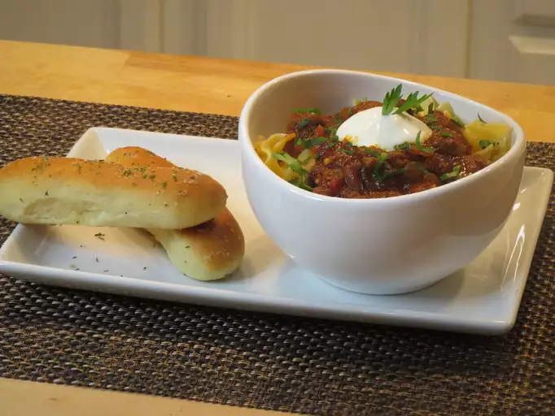

<
Goulash

Description
This Hungarian-style goulash is a thick beef stew that is great served over
buttered noodles and garnished with sour cream.
Ingredients
-
Meat: 2 ½ pounds boneless beef chuck roast, cut into 2-inch cubes
- Onion: 2 onions, chopped
- Oil: 2 tablespoons vegetable oil
- Olive oil: 2 teaspoons olive oil
- Paprika: 2 tablespoons Hungarian paprika
- Caraway seeds: 2 teaspoons caraway seeds, crushed
- Salt: ½ teaspoon salt
- Pepper: 1 teaspoon freshly ground black pepper
- Marjoram: 1 teaspoon dried marjoram
- Thyme: ½ teaspoon ground thyme
- Cayenne pepper: ½ teaspoon cayenne pepper
- Chicken broth: 4 cups chicken broth, divided
- Tomato paste: ¼ cup tomato paste
- Garlic: 3 cloves garlic, crushed
- Balsamic vinegar: 2 tablespoons balsamic vinegar
- Sugar: 1 teaspoon white sugar
- Bay leaf: 1 bay leaf
Steps
-
Season beef with salt and black pepper. Heat vegetable oil in a large
skillet over high heat; cook and stir beef in hot oil in batches until
browned on all sides, about 5 minutes per batch. Transfer to a large
stockpot and reserve drippings in the skillet.
-
Return skillet to medium heat; stir onions into the reserved drippings,
drizzle olive oil over onions, season with 1/2 teaspoon salt and cook until
onion has softened, about 5 minutes. Transfer to the stockpot with beef.
-
Combine paprika, caraway seeds, black pepper, marjoram, thyme, and cayenne
pepper in the skillet and toast over medium heat until fragrant, about 3
minutes. Add 1 cup chicken broth and stir; transfer to the beef and onion
mixture.
-
Stir 3 cups chicken broth into beef mixture. Add tomato paste, garlic,
vinegar, sugar, 1/2 teaspoon salt, and bay leaf; place stockpot over high
heat and bring to a boil. Reduce heat to low and simmer until a fork inserts
easily into the meat, 1 1/2 to 2 hours.